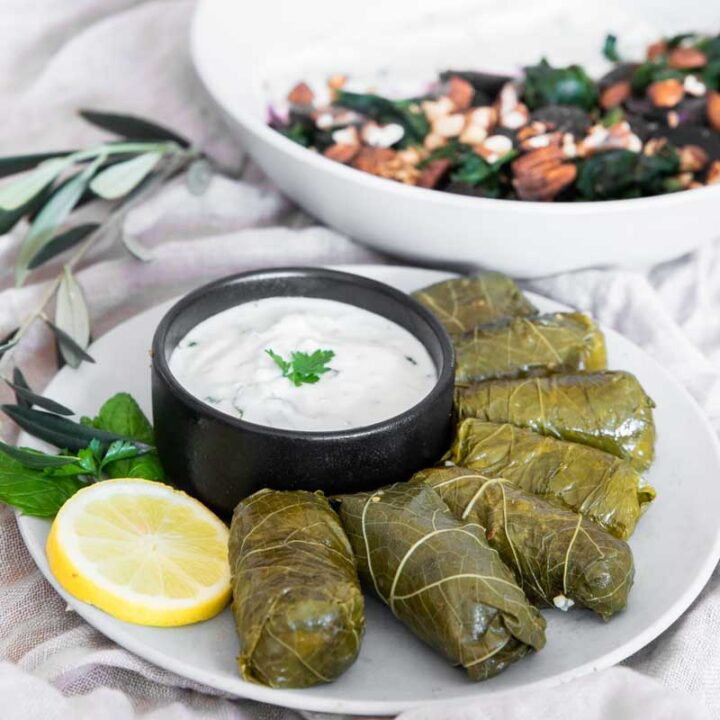

Dolma

Ingredients
- 1 1/2 kg ground veal
- 1 cup rice
- 2 onions
- 1 coriander
- 2 1/2 stick butter
- 1 basil
- 1 dill
- 1 marinated grape or beetroot leaves
Steps
- Mix ground veal, rice , butter, and spices
- Wrap small portion in a grape/beetroot leave and put into a pot
- Add boiling water into the pot, but don't let it cover 'rolls'. Put a plate on top and slightly press the rolls, making sure the water doesn't cover the plate completely. Remove extra water if needed.
- Let it boil on a low fire about 40 min or until the leaves will become soft enough.
- Best served with sour cream/ketchup.